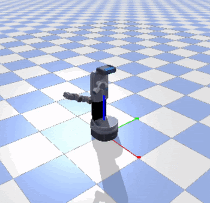

DC-UNet for white matter lesions segmentation
Pontifical Catholic University of Rio de Janeiro
Abstract: Analysis and segmentation techniques of magnetic resonance images of
the brain have been widely explored. Manual interpretation of the brain image
is quite time-consuming and directly depends on the operator’s assessment.
Thus, some automations were previously proposed, but recently, the study
of automation using Deep Learning has gained prominence. In this context,
we propose a model of neural networks with DC-UNet architecture for the
segmentation of lesions in white matter in brain images

Undergraduate Thesis
Advisor: Prof. Marcelo Gattass.
One-armed Robot Gestures
King Abdullah University of Science and Technology
Abstract: The interaction between human and robot is increasing in society, and
it may be difficult to understand what the robot's intention is, but
we need to understand it's intention for better cooperation.
Our goal was to train a one-armed robot to gesture expressively so it can be understood by humans.
To get started, we chose simple moves like “point”, “hi” and “go ahead” for the robot to learn.
Some challenges are the fact that humans have two arms while the one-armed robot has only one, and
the difference between joints of a human's arms and robot's arm (for example they have different angles of rotation).
We first collected data of human gestures and then used a human pose estimation model to get human joints positions. Finally we
trained a deep learning model to generate expressive one-armed robot's movement from human joints positions as input.

Advisor: Prof. Shinkyu Park
3D Oil Channel Modeling from Images
Pontifical Catholic University of Rio de Janeiro
Abstract: In this work we present the 3D modeling of turbiditic channels inside lobes using 2D images obtained through
geostatistical multiple-point methods. We are assuming that these
images can be interpreted as projections on the xy plane of
the phenomenon. The proposed method consists of creating the
turbidite lobe using the model proposed in Cardona’s work, [1].
Then the 2D images of the channels are projected onto the surface
of the lobe. Finally, successive erosions of the image are layered
and used to generate the volume to the channel system. This
process has great importance in research and economics, because
in the Brazilian oil exploration, about 90% of the reservoirs are
turbiditics and they are difficult to study [2].

Paper
Advisor: Prof. Sinésio Pesco
[1] Y. A. Cardona, “Object-based modelling of turbidity lobes using non
parametric b-splines,” Dissertação de Doutorado, Pontifícia Universidade
Catolica do Rio de Janeiro, 2016
[2] F. M. de Lima, “Analise estratigrafica dos reservatorios turbiditicos do
campo de namorado.” Dissertacao de Mestrado, Universidade Estadual
Paulista, 2004